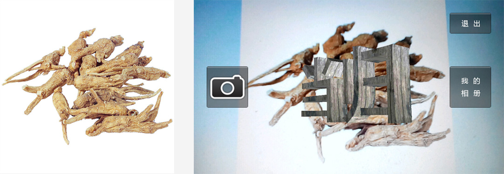
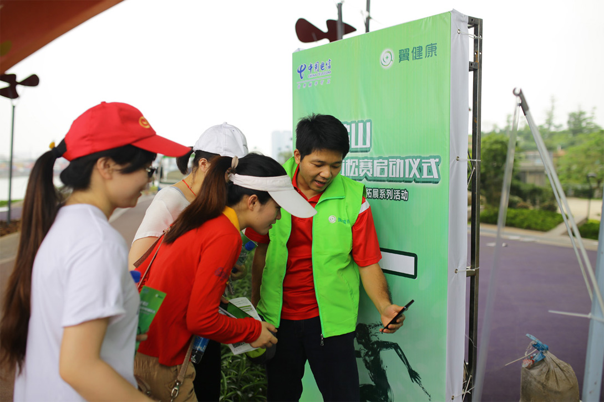

系统概述:
中药科普AR增强现实APP是配合广州电信“2014翼健康TOP联盟绿色拓展系列活动--健走佛山虚拟马拉松赛”专门定制的增强现实互动APP。
活动以科技与全民健身为主题，于佛山新城绿道举行虚拟马拉松赛。参赛者在完成健走路线 的同时，在途中的互动游戏点完成相关任务获得积分，并于终点处兑换奖品。APP作为互动的一个环节，于游戏点张贴中药药材图片，APP在相机的功能基础上匹配药材图片，在手机画面中显示该药材名称的3D模型，并以垂直方式显示。用户需通过倾斜手机，与图片平面形成一定角度，方可看到具体文字。另附带截屏与相册功能。
案例图片:

